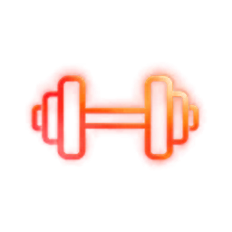
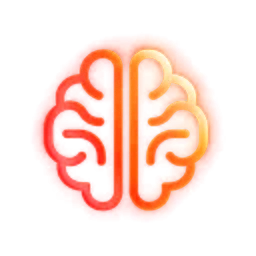

Sākuma izvērtējums
60 minūšu saruna un sākuma testi: spēks, izturība, ķermeņa sastāvs, miegs un tavas darba nedēļas ritms.
Kāpēc: plāns ir tik precīzs, cik precīzi mērījumi zem tā. 12. nedēļā tos atkārtojam un redzam, kas mainījies.
Mentor programma
Es projektēju tavu treniņu, uzturu un atjaunošanos, katru nedēļu pielāgoju plānu tam, kā tava nedēļa patiešām aizritēja, un divreiz mēnesī trenējamies kopā. Pēc 12 nedēļām tu šo sistēmu proti vadīt pats.
299 € mēnesīvai 799 € par 3 mēnešiem3 vietas uz ziemas sezonu
Kāpēc Mentor
Mēs visi esam sākuši ar labu plānu un trešajā nedēļā sapratuši, ka dzīve to neievēro: komandējums, īsa nakts, garš projekts darbā. Izrādās, rezultātu lielā mērā nosaka tas, cik ātri plānu pielāgo. Pētījumā, kur viena grupa trenējās trenera uzraudzībā, bet otra pēc tā paša plāna patstāvīgi, uzraudzītā grupa 12 nedēļās kļuva stiprāka (Mazzetti et al., 2000).
Otra puse ir atskaite. Cilvēks trenējas citādi, ja zina, ka svētdien kāds gaidīs viņa skaitļus. Metaanalīzē par mērķu sasniegšanu progresa uzraudzība to uzlaboja konsekventi, un efekts bija lielāks, ja progress tika pierakstīts vai kādam atskaitīts (Harkin et al., 2016). Tu atskaities man, es atbildu ar nākamās nedēļas plānu.
Labā ziņa: pielāgošanu var iebūvēt sistēmā. Tieši to dara Mentor - un katru izmaiņu es paskaidroju, lai tu saproti loģiku un vari to turpināt bez manis.
Kas ir iekļauts
Katram elementam ir konkrēts darbs: ko tu saņem un kāpēc tas ir vajadzīgs.
60 minūšu saruna un sākuma testi: spēks, izturība, ķermeņa sastāvs, miegs un tavas darba nedēļas ritms.
Kāpēc: plāns ir tik precīzs, cik precīzi mērījumi zem tā. 12. nedēļā tos atkārtojam un redzam, kas mainījies.

Spēks, izturība un atjaunošanās vienā plānā tavā TrainingPeaks vai Hevy kontā. Katram treniņam - mērķis un intensitāte.
Kāpēc: katru dienu zini, ko darīt un kāpēc. Lēmumus pieņem plāns, tavs prāts paliek darbam.
Enerģijas un olbaltumvielu ietvars, maltīšu struktūra darba dienām un treniņu dienām, plus vienkārši noteikumi ceļojumiem.
Kāpēc: treniņš dod stimulu, uzturs un miegs nosaka, cik daudz no tā paliek.
Svētdien aizpildi 5 minūšu atskaiti: miegs, enerģija, treniņi, svars. Pirmdien es pielāgoju nākamo nedēļu un pierakstu, kāpēc.
Kāpēc: šis ir Mentor kodols - atskaite. Kāds gaida tavus skaitļus, plāns seko tavai dzīvei, un mazas novirzes tiek labotas, pirms tās kļūst par mēnesi.
Līdz 45 minūtēm video sarunā, kad tev tas vajadzīgs: rezultāti, šķēršļi un nākamo nedēļu prioritātes.
Kāpēc: ik pēc divām nedēļām paskatāmies uz lielo bildi, lai iknedēļas korekcijas ved uz tavu mērķi.
Raksti, kad rodas jautājums. Atbildu 24 stundu laikā darba dienās.
Kāpēc: viens laikus uzdots jautājums ietaupa nedēļu treniņu nepareizā virzienā.
Trenējamies kopā privātā zālē Rīgā, zāles īri es noorganizēju un apmaksāju. Tehnika, slodzes izjūta un tas, ko video neparāda.
Kāpēc: uzraudzītā treniņā cilvēki trenējas ar paredzēto slodzi, nevis ar to, kas šķiet ērta.
Plato, slikts miegs, sāpošs cels vai sagruvis grafiks - risinājumu meklēju aktuālākajos pētījumos un rīkos, nevis šablonā.
Kāpēc: plāns, kas neprot pielāgoties problēmai, beidzas tieši tad, kad tā parādās.

Fokusa un regulācijas protokoli: elpošanas tehnika, vakara atslēgšanās rutīna un rutīna pirms sacensībām vai svarīgas prezentācijas.
Kāpēc: tā pati slodze jūtas citādi, kad prāts ir atpūties. Fokuss ir prasme, un to var trenēt.
Varianti
Rasējumu tu vadi pats. Mentor programmu vadām kopā. Konsultācija atrisina vienu konkrētu jautājumu.
Tavs 12 nedēļu plāns, uzzīmēts vienreiz. Tālāk vadi pats.
mēnesī · bez saistībām
vai 799 € par 3 mēnešiem uzreiz
Es projektēju. Tu izpildi un atskaities.
Katru nedēļu precizējam kopā.
Palikušas 3 vietas
Viens jautājums, viena saruna: treniņš, atjaunošanās, sacensību plāns vai psiholoģiskā sagatavošana.
| Elements | Rasējums | Mentor |
|---|---|---|
| Sākuma saruna | 30 min | 60 min + testi |
| 12 nedēļu treniņu plāns | ir | ir |
| Uzturs | Pamatvadlīnijas | Pilna sistēma |
| Plāna korekcijas | 1 reizi, 2. nedēļā | Katru nedēļu |
| Atskaite | - | Katru svētdienu |
| Zvani | - | 2 reizes mēnesī |
| Klātienes treniņi privātā zālē | - | 2 reizes mēnesī |
| Jautājumi starp pārbaudēm | - | Darba dienās, 24 h |
| Mentālās veiktspējas rīki | - | ir |
| Lietotņu konti (TrainingPeaks vai Hevy) | - | ir |
| Atkārtoti testi 12. nedēļā | - | ir |
| Cena | 149 € vienreiz | 299 € mēnesī vai 799 € par 3 mēnešiem |
Ja sāc ar Rasējumu un 30 dienu laikā pārej uz Mentor, Rasējuma cenu ieskaitu pirmajā mēnesī.
Kā tas notiek
No pieteikuma līdz brīdim, kad sistēmu vadi pats.
Anketa, apmēram 10 minūtes: mērķis, vēsture, laiks nedēļā, ierobežojumi.
1. nedēļā uzmērām sākuma punktu un vienojamies par mērķi 12 nedēļām.
Treniņi un uzturs ir tavā kontā 3 dienu laikā pēc sarunas.
Izpildi, svētdien atskaite, pirmdien korekcija. Divreiz mēnesī zvans un divreiz treniņš klātienē.
12. nedēļā salīdzinām ar sākumu. Tālāk turpini Mentor vai vadi plānu pats.
Kam tas der
Kas projektē
Bijušais profesionālais šosejas riteņbraucējs, tagad IRONMAN un HYROX. Doktorants sporta zinātnē Rīgas Stradiņa universitātē un jaunais pētnieks sportistu psiholoģijas projektā. Maģistra grādi sporta zinātnē un psiholoģiskajā koučingā. Katru metodi, ko lietoju Mentor programmā, esmu izmēģinājis uz sevis.
Biežākie jautājumi
Treniņi pēc plāna, parasti 3-5 reizes nedēļā atkarībā no mērķa, plus 5 minūtes svētdienas atskaitei. Plānu zīmēju tavai nedēļai, nevis otrādi.
Plānu zīmēju tam aprīkojumam, kas tev ir: sporta zāle, mājas vai āra treniņi. Ja mērķim vajadzīgs kas vairāk, to pasaku sākuma sarunā.
Atkārtojam sākuma testus un salīdzinām. Tālāk vari turpināt Mentor nākamajam ciklam vai aiziet ar plānu un izpratni, kā to vadīt pats.
Mentālās veiktspējas darbs ir prasmju treniņš: fokuss, regulācija, rutīnas. Ja tev ir veselības sūdzības, vispirms runā ar ārstu, un es palīdzēšu saprast, pie kā vērsties.
Nē. Mentor ir 299 € mēnesī, un vari beigt pēc jebkura mēneša. Ja maksā par trim mēnešiem uzreiz, tas ir 799 € (897 € vietā). Trīs mēnešus iesaku, jo ieradumam kļūt automātiskam parasti vajag ap 66 dienām (Lally et al., 2010), un trešajā mēnesī tu jau vadi sistēmu pats, kamēr es vēl skatos līdzi.
Privātā zālē Rīgā, kuru rezervēju uz stundu tikai mums diviem. Zāles īre ir iekļauta cenā, laiku saskaņojam iepriekš.
Jā. Ja 30 dienu laikā pārej uz Mentor, Rasējuma cenu ieskaitu pirmajā mēnesī.
Sistēma, ko vari vadīt pats.Sākt sadarbību
Anketa aizņem apmēram 10 minūtes. Atbildu 24 stundu laikā darba dienās. 3 vietas uz ziemas sezonu.
Ansoneri principi - uzzīmēti laboratorijā, pārbaudīti laukumā